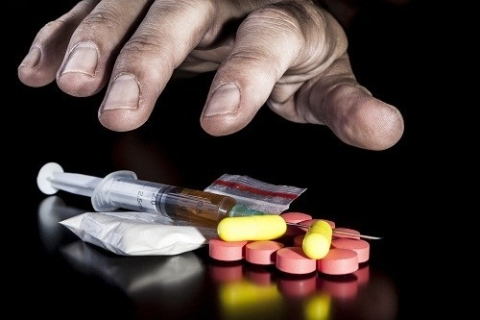
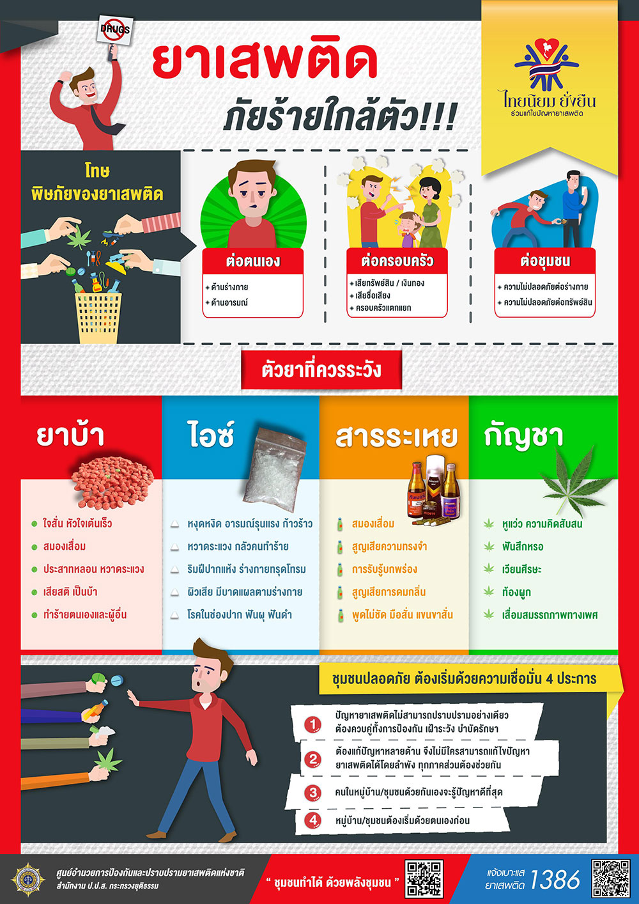

ประเภทของยาเสพติด
- ออกฤทธิ์กดประสาท เช่น ฝิ่น มอร์ฟิ่น เฮโรอีน เซโคบาร์ทิบาท (บาร์บิทูเรต) เหล้าแห้ง หรือโซโคบาล ทำให้ประสาทมึนชา สมอง อารมณ์ จิตใจ เฉื่อยชา
- ออกฤทธิ์กระตุ้นประสาท เช่น แอมเฟตามีน กระท่อม โคเคน พวกยาม้า ยาขยัน กระตุ้นเร่งประสาททำให้เกิดนิ่ว ตื่นตัว กระวนกระวาย ประสาทไหวตัวอยู่เสมอ
สาเหตุของการติดยาเสพติด
ทางด้านร่างกาย
- การจัดหาหรือซื้อสารเสพติดด้วยตนเองเนื่องจากมีอาการเจ็บปวดทางร่างกาย
- พวกรักษาตนเอง เช่นประสบอุบัติเหตุแพทย์ให้ยาระงับปวดอยู่ชั่วขณะหนึ่ง
ทางด้านจิตใจ
- พวกบุคลิกภาพผิดปกติ เช่น ต่อต้านสังคม ก้าวร้าว ชอบพึ่งพาผู้อื่น แยกตัวเองหรือซึมเศร้า
- พวกที่มีความกังวลใจ หวาดกลัว หรือป่วยเป็นโรคประสาทหรือโรคจิตมีอาการนอนไม่หลับ
ทางด้านสังคม
- ถูกเพื่อนชวน อยากลอง
- อยู่ในสภาพแวดล้อมที่ใกล้ชิดกับพวกติดสารเสพติด
- ความกดดันทางสังคม เช่น มีปัญหาทางเศรษฐกิจ ไม่มีงานทำ
โทษของการติดยาเสพติด
- ทำลายประสาทสมอง จิตใจเสื่อม ซึมเศร้า กังวล เลื่อนลอย และเป็นโรคจิตจากพิษยานั้นๆ
เสียทรัพย์ที่จะต้องซื้อยามาเสพ และรักษาตัว - เป็นภัยต่อสังคม
วิธีการแก้ไข
- การแก้ไขเด็กติดยาเสพติด ต้องการกำลังใจจาก ผู้ปกครองและครูเป็นอย่างมาก ฉะนั้น ผู้ปกครองและครูจึงมีส่วนสำคัญในการช่วยเด็กของตนให้หายจากการติดยาเสพติดซึ่งมีวิธีปฏิบัติดังนี้
- กิจกรรมที่เสริมสร้างพลังใจ อารมณ์ ความนึกคิดไปในทางที่มีความหมาย เช่น ชมรมกีฬา ชมรมดนตรี
- อธิบายให้เด็กเข้าใจและรู้โทษตามกฎหมายที่จะได้รับจากการใช้ยาเสพติด
